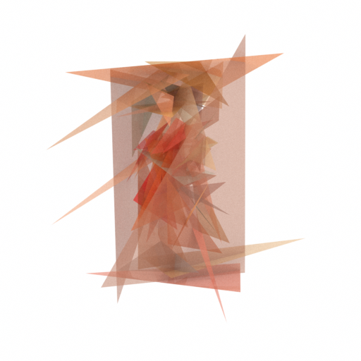
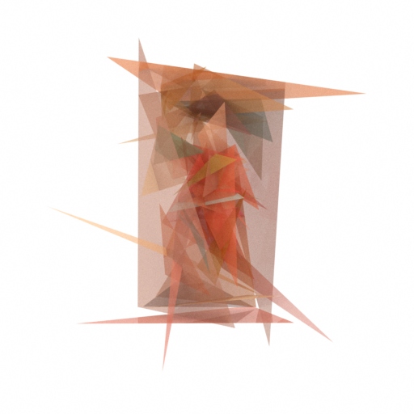
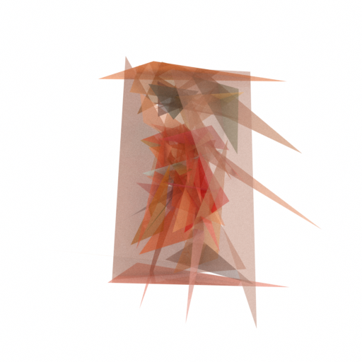
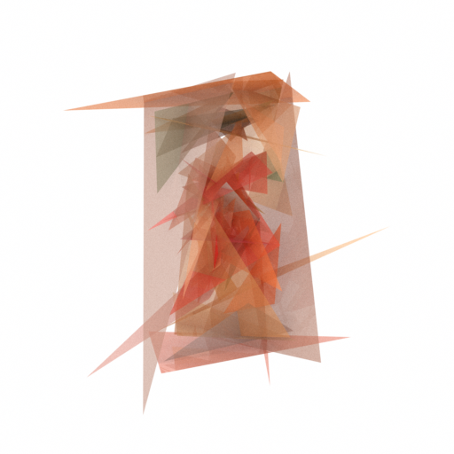

WARNING: Before submission, double-check the git history and process accordingly to preserve anonymity.
WARNING: Before submission, double-check the git history and process accordingly to preserve anonymity.
Paper: Anonymous Draft
Authors: Anonymous Author(s)
Abstract: In computational creativity, digital arts, most in two dimension (2D) canvas, has been a dominating topic where evolution algorithms have recently shown great quality and efficiency. However, going from 2D to three dimension (3D) where computational approaches empowers creation of 3D art remains an open field. In this work, we extend the boundary of evolutionary algorithms to computational creativity in the spatial 3D art, by bridge evolution strategies (ES) and 3D rendering through customizable parameterization of scenes. We demonstrate that our approach is capable of placing semi-transparent triangles in 3D scenes that, when viewing from specific angles, renders into films that looks like what humans understand natural language. The flexibility to customize scenes allows a new way for the artist to express creativity ideas.
This corresponds to the Figure 1 in the paper, which shows the following: Our proposed method places semi-transparent triangles in three dimension (3D) spaces using Evolution Strategies. Leveraging ray-tracing based rendering Mitsuba 3, the rendered film at possibly multiple cameras is compared with its corresponding, user-specified text prompt using distance between their representation embedded by CLIP. Such distances, aggregate by average, are used as the fitness in sense of Evolution Strategies, which optimize the parameters of triangles to archive better finesses.
| Prompts | Prompt/Film 1 | Prompt/Film 2 | Prompt/Film 3 | Prompt/Film 4 |
| Prompt 1 Prompt 2 Prompt 3 Prompt 4 = "Ancient Roman painting, Fourth Style, Third Style, second Style, Pompeii." | ||||
| Rendered Film |  |  |  |  |
| 360 Degree View | ||||